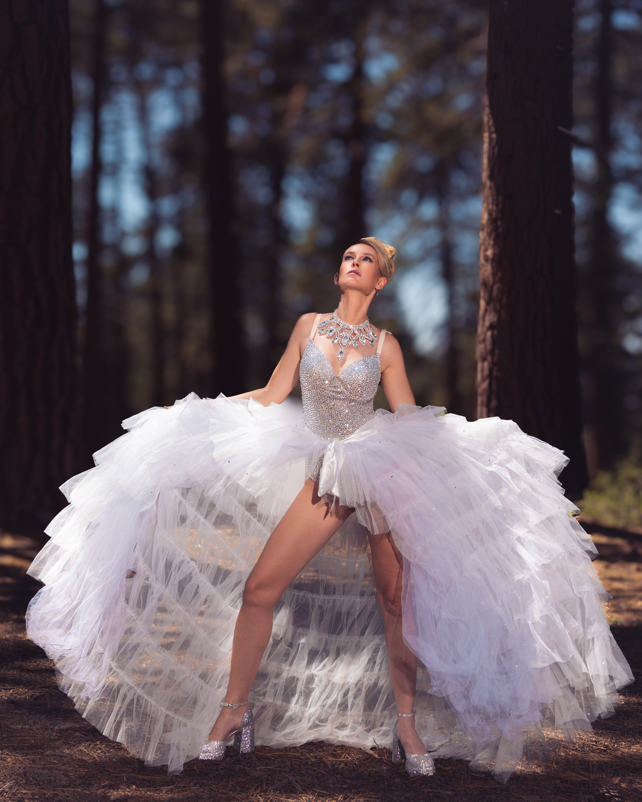
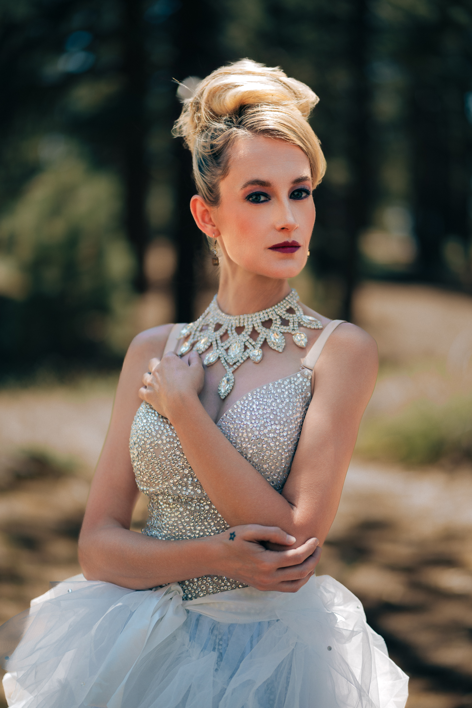
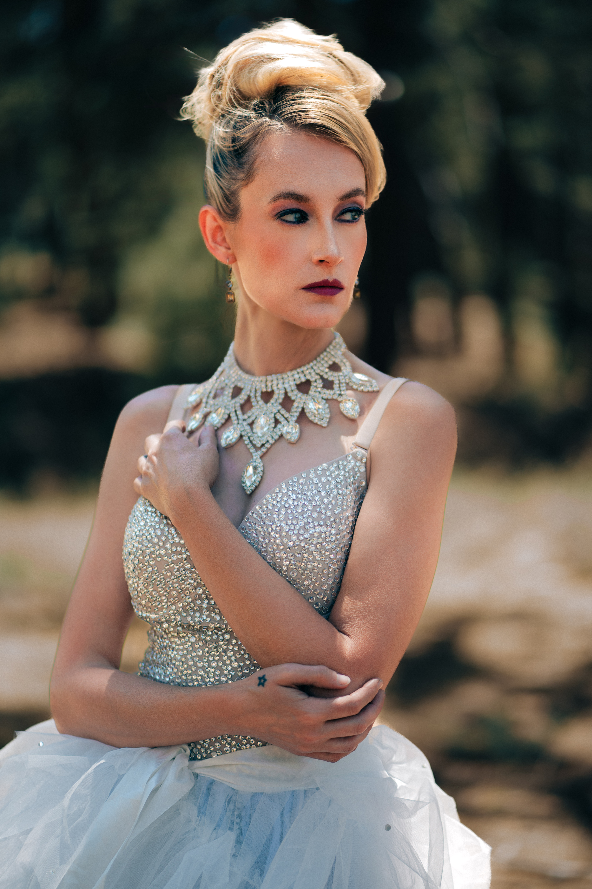

Built before Outlast, this shoot was never about survival TV — it was about that feeling of being a little too far from the city, wrapped in sequins and lace, waiting for the next log on the fire.